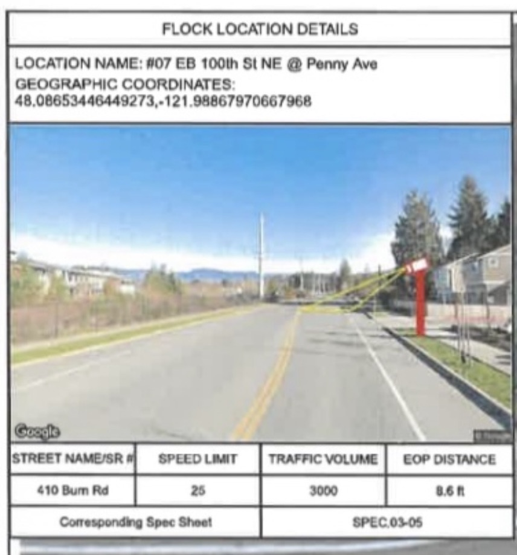

The school camera.
The plan set identifies Location #07 as eastbound 100th Street NE at Penny Avenue. The placement, orientation shown in the plan, and the 2026 school-area restriction are central to the local compliance question.
Location #07.
The Flock location drawing identifies the site as “#07 EB 100th St NE @ Penny Ave.” The sheet includes geographic coordinates, a street-level placement view and an overhead orientation graphic.


Location #07 detail. The crop preserves the plan’s location name, coordinates and street-level placement image.">Schools are specifically listed.
ESSB 6002 makes it unlawful for an agency to collect ALPR data on the premises, immediate surroundings, or access to or from elementary and secondary schools, along with other listed protected facilities. The statute defines “facilities” for this section to include the relevant buildings and immediately adjacent parking lots primarily or exclusively used for those purposes.
The location plan establishes where Flock intended this camera to be placed and the orientation shown on the plan. It does not, by itself, establish the camera’s exact current electronic field of capture or whether the site was later changed.

What is not established yet.
School District notice
The records currently displayed on this site do not establish whether or when Granite Falls School District was advised of the camera placement.
Current field of capture
The permit drawing shows planned orientation. It does not prove the exact live electronic field of capture today.
Post-ESSB changes
The existing record shown here does not establish whether Location #07 was moved, redirected, disabled, covered or otherwise reconfigured after the 2026 law took effect.
Collection at school access
The plan and statute identify the compliance question, but the screenshots alone do not establish what data the camera actually collected after the new restrictions took effect.